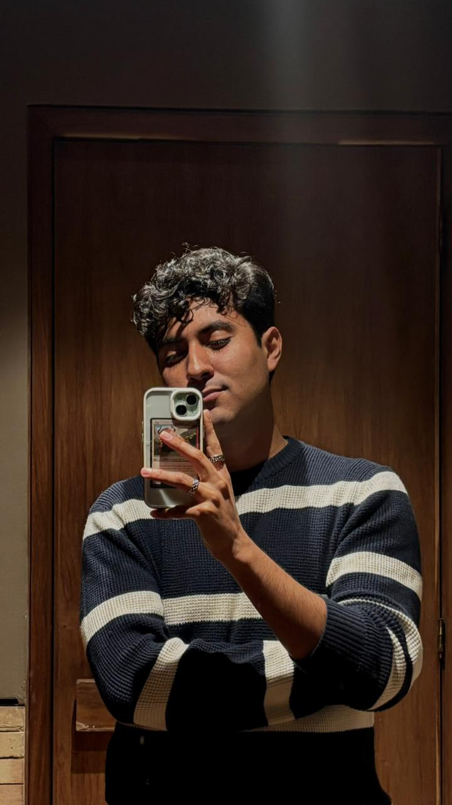
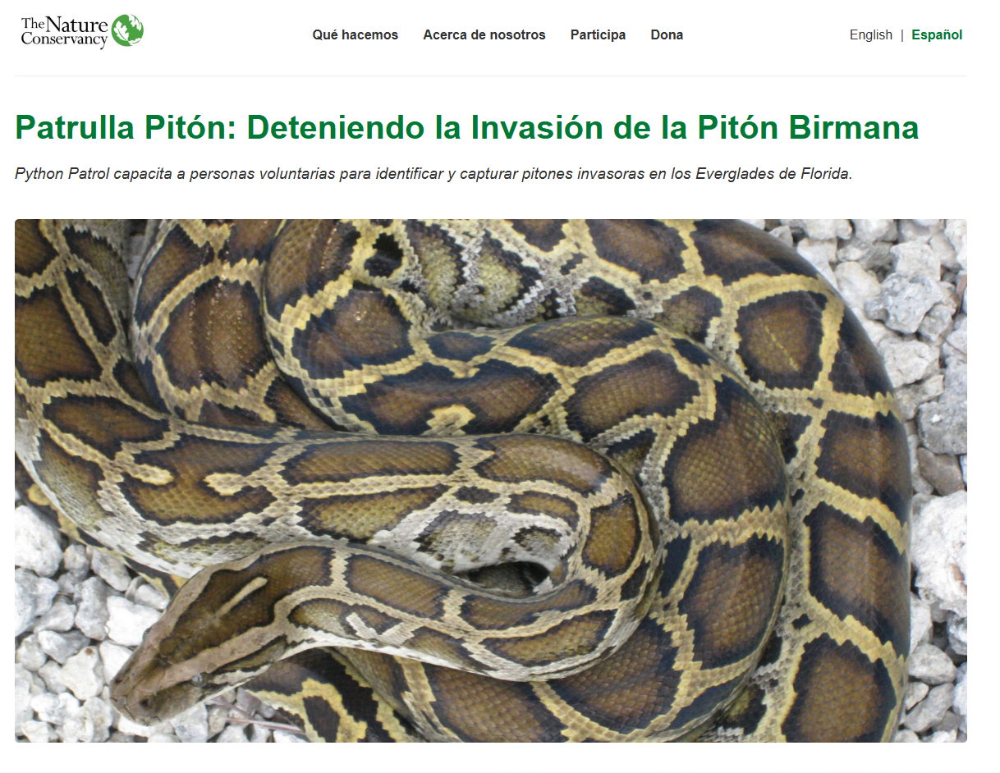
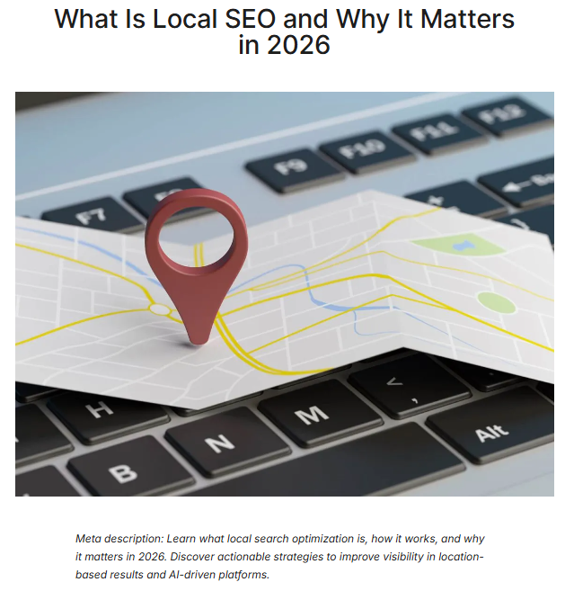
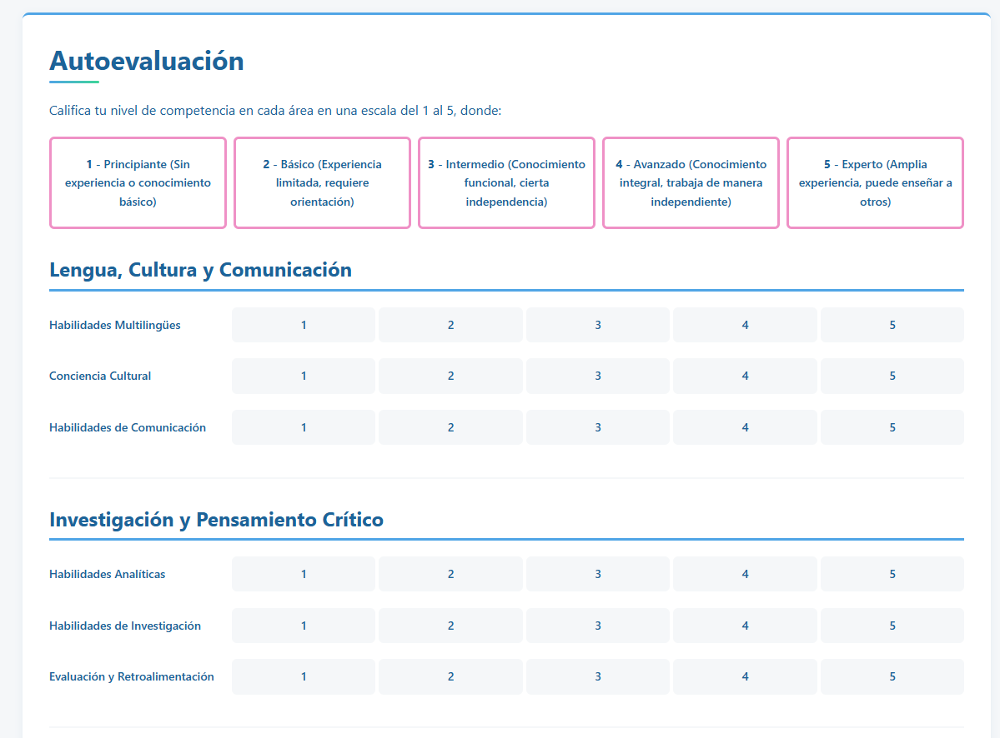
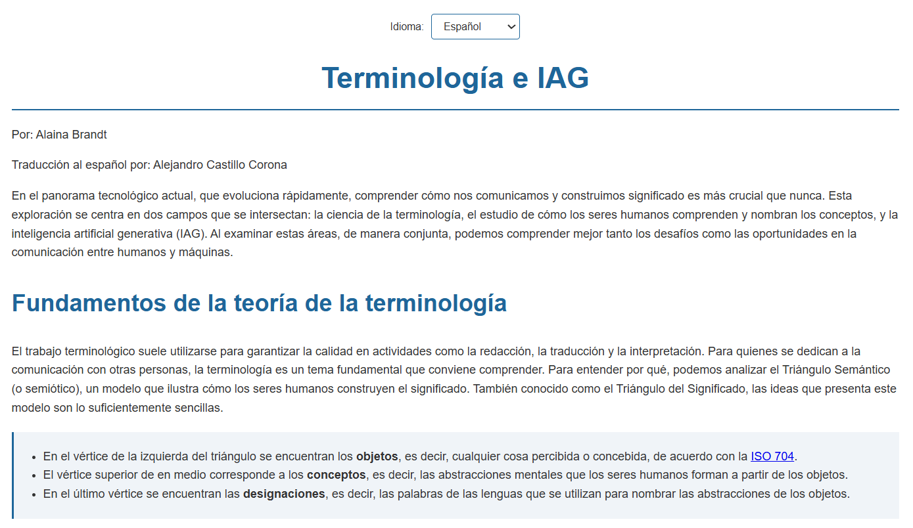
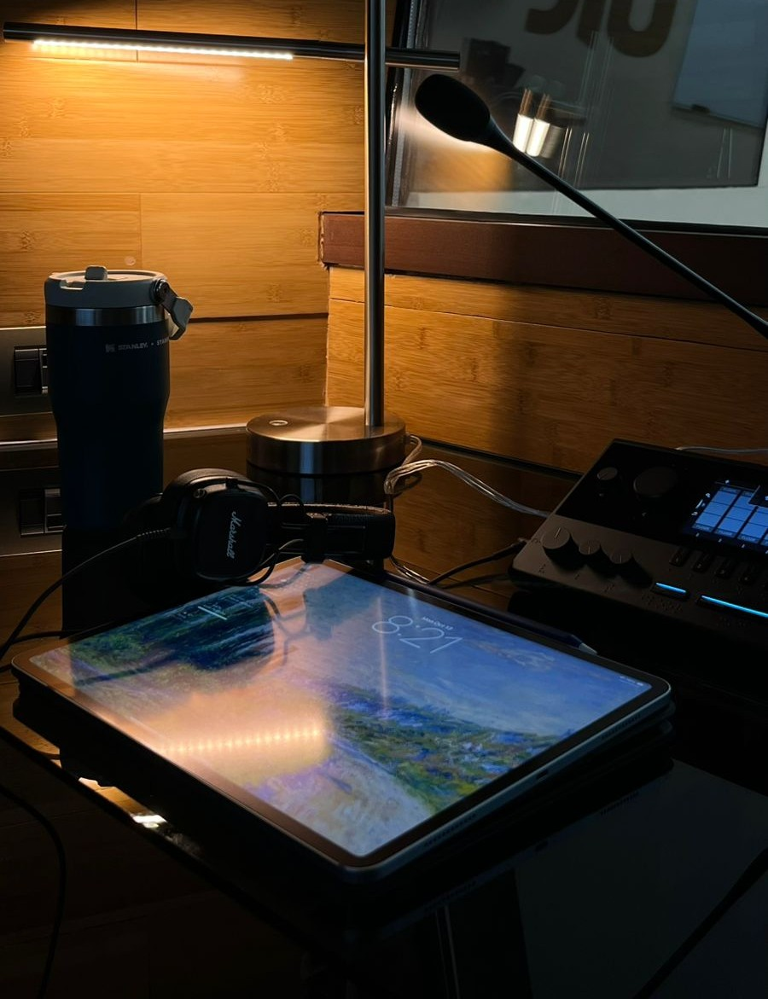

¡Hola! Mi nombre es Alejandro Castillo Corona y soy estudiante de traducción y localización trabajando entre español e inglés. Me interesa especialmente la traducción audiovisual, la localización y los servicios lingüísticos que permiten que el contenido llegue a audiencias internacionales. A través de mis proyectos académicos he desarrollado habilidades en flujos de trabajo de traducción, gestión terminológica y localización web.
Te invito a explorar mi portafolio y algunos ejemplos de mi trabajo. Si te interesa colaborar, no dudes en ponerte en contacto conmigo.

Localización de un sitio web educativo del inglés al español como parte de un flujo de trabajo de localización web. El proyecto consistió en adaptar el texto de la interfaz, los elementos de navegación y el contenido visible para el usuario con el fin de crear una versión funcional y natural del sitio para usuarios hispanohablantes.
Ver proyecto
Creación y publicación de un artículo de blog sobre SEO local utilizando WordPress. El proyecto se enfocó en la redacción de contenido para audiencias digitales, la organización de la información para mejorar la legibilidad y la relación entre la localización y el marketing digital en entornos multilingües.
Ver proyecto
Traducción y localización de un sitio web que presenta competencias profesionales del sector de la localización. El proyecto implicó adaptar terminología, referencias culturales y estructura del lenguaje para producir una versión en español que reflejara fielmente el contenido de la página original en inglés.
Ver proyecto
Localización de una página web enfocada en terminología del inglés al español. El proyecto incluyó la traducción de términos especializados relacionados con la localización y el mantenimiento de consistencia en la presentación de definiciones, ejemplos y conceptos técnicos dentro del sitio bilingüe.
Ver proyecto
¿Te interesa trabajar en conjunto? ¡Conectemos!